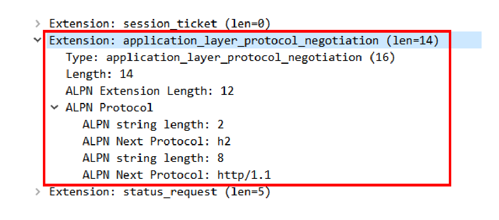
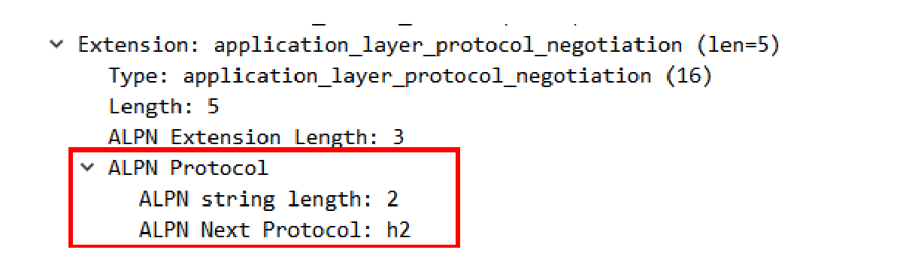

- 00 开篇词｜To Be a HTTP Hero.md.html
- 01 时势与英雄：HTTP的前世今生.md.html
- 02 HTTP是什么？HTTP又不是什么？.md.html
- 03 HTTP世界全览（上）：与HTTP相关的各种概念.md.html
- 04 HTTP世界全览（下）：与HTTP相关的各种协议.md.html
- 05 常说的“四层”和“七层”到底是什么？“五层”“六层”哪去了？.md.html
- 06 域名里有哪些门道？.md.html
- 07 自己动手，搭建HTTP实验环境.md.html
- 08 键入网址再按下回车，后面究竟发生了什么？.md.html
- 09 HTTP报文是什么样子的？.md.html
- 10 应该如何理解请求方法？.md.html
- 11 你能写出正确的网址吗？.md.html
- 12 响应状态码该怎么用？.md.html
- 13 HTTP有哪些特点？.md.html
- 14 HTTP有哪些优点？又有哪些缺点？.md.html
- 15 海纳百川：HTTP的实体数据.md.html
- 16 把大象装进冰箱：HTTP传输大文件的方法.md.html
- 17 排队也要讲效率：HTTP的连接管理.md.html
- 18 四通八达：HTTP的重定向和跳转.md.html
- 19 让我知道你是谁：HTTP的Cookie机制.md.html
- 20 生鲜速递：HTTP的缓存控制.md.html
- 21 良心中间商：HTTP的代理服务.md.html
- 22 冷链周转：HTTP的缓存代理.md.html
- 23 HTTPS是什么？SSLTLS又是什么？.md.html
- 24 固若金汤的根本（上）：对称加密与非对称加密.md.html
- 25 固若金汤的根本（下）：数字签名与证书.md.html
- 26 信任始于握手：TLS1.2连接过程解析.md.html
- 27 更好更快的握手：TLS1.3特性解析.md.html
- 28 连接太慢该怎么办：HTTPS的优化.md.html
- 29 我应该迁移到HTTPS吗？.md.html
- 30 时代之风（上）：HTTP2特性概览.md.html
- 31 时代之风（下）：HTTP2内核剖析.md.html
- 32 未来之路：HTTP3展望.md.html
- 33 我应该迁移到HTTP2吗？.md.html
- 34 Nginx：高性能的Web服务器.md.html
- 35 OpenResty：更灵活的Web服务器.md.html
- 36 WAF：保护我们的网络服务.md.html
- 37 CDN：加速我们的网络服务.md.html
- 38 WebSocket：沙盒里的TCP.md.html
- 39 HTTP性能优化面面观（上）.md.html
- 40 HTTP性能优化面面观（下）.md.html
- 结束语 做兴趣使然的Hero.md.html
- 捐赠
33 我应该迁移到HTTP2吗？
这一讲是“飞翔篇”的最后一讲，而 HTTP 的所有知识也差不多快学完了。
前面你已经看到了新的 HTTP/2 和 HTTP/3 协议，了解了它们的特点和工作原理，如果再联系上前几天“安全篇”的 HTTPS，你可能又会发出疑问：
“刚费了好大的力气升级到 HTTPS，这又出了一个 HTTP/2，还有再次升级的必要吗？”
与各大浏览器“强推”HTTPS 的待遇不一样，HTTP/2 的公布可谓是“波澜不惊”。虽然它是 HTTP 协议的一个重大升级，但 Apple、Google 等科技巨头并没有像 HTTPS 那样给予大量资源的支持。
直到今天，HTTP/2 在互联网上还是处于“不温不火”的状态，虽然已经有了不少的网站改造升级到了 HTTP/2，但普及的速度远不及 HTTPS。
所以，你有这样的疑问也是很自然的，升级到 HTTP/2 究竟能给我们带来多少好处呢？到底“值不值”呢？
HTTP/2 的优点
前面的几讲主要关注了 HTTP/2 的内部实现，今天我们就来看看它有哪些优点和缺点。
首先要说的是，HTTP/2 最大的一个优点是完全保持了与 HTTP/1 的兼容，在语义上没有任何变化，之前在 HTTP 上的所有投入都不会浪费。
因为兼容 HTTP/1，所以 HTTP/2 也具有 HTTP/1 的所有优点，并且“基本”解决了 HTTP/1 的所有缺点，安全与性能兼顾，可以认为是“更安全的 HTTP、更快的 HTTPS”。
在安全上，HTTP/2 对 HTTPS 在各方面都做了强化。下层的 TLS 至少是 1.2，而且只能使用前向安全的密码套件（即 ECDHE），这同时也就默认实现了“TLS False Start”，支持 1-RTT 握手，所以不需要再加额外的配置就可以自动实现 HTTPS 加速。
安全有了保障，再来看 HTTP/2 在性能方面的改进。
你应该知道，影响网络速度的两个关键因素是“带宽”和“延迟”，HTTP/2 的头部压缩、多路复用、流优先级、服务器推送等手段其实都是针对这两个要点。
所谓的“带宽”就是网络的传输速度。从最早的 56K/s，到如今的 100M/s，虽然网速已经是“今非昔比”，比从前快了几十倍、几百倍，但仍然是“稀缺资源”，图片、视频这样的多媒体数据很容易会把带宽用尽。
节约带宽的基本手段就是压缩，在 HTTP/1 里只能压缩 body，而 HTTP/2 则可以用 HPACK 算法压缩 header，这对高流量的网站非常有价值，有数据表明能节省大概 5%~10% 的流量，这是实实在在的“真金白银”。
与 HTTP/1“并发多个连接”不同，HTTP/2 的“多路复用”特性要求对一个域名（或者 IP）只用一个 TCP 连接，所有的数据都在这一个连接上传输，这样不仅节约了客户端、服务器和网络的资源，还可以把带宽跑满，让 TCP 充分“吃饱”。
这是为什么呢？
我们来看一下在 HTTP/1 里的长连接，虽然是双向通信，但任意一个时间点实际上还是单向的：上行请求时下行空闲，下行响应时上行空闲，再加上“队头阻塞”，实际的带宽打了个“对折”还不止（可参考[第 17 讲]）。
而在 HTTP/2 里，“多路复用”则让 TCP 开足了马力，“全速狂奔”，多个请求响应并发，每时每刻上下行方向上都有流在传输数据，没有空闲的时候，带宽的利用率能够接近 100%。所以，HTTP/2 只使用一个连接，就能抵得过 HTTP/1 里的五六个连接。
不过流也可能会有依赖关系，可能会存在等待导致的阻塞，这就是“延迟”，所以 HTTP/2 的其他特性就派上了用场。
“优先级”可以让客户端告诉服务器，哪个文件更重要，更需要优先传输，服务器就可以调高流的优先级，合理地分配有限的带宽资源，让高优先级的 HTML、图片更快地到达客户端，尽早加载显示。
“服务器推送”也是降低延迟的有效手段，它不需要客户端预先请求，服务器直接就发给客户端，这就省去了客户端解析 HTML 再请求的时间。
HTTP/2 的缺点
说了一大堆 HTTP/2 的优点，再来看看它有什么缺点吧。
听过上一讲 HTTP/3 的介绍，你就知道 HTTP/2 在 TCP 级别还是存在“队头阻塞”的问题。所以，如果网络连接质量差，发生丢包，那么 TCP 会等待重传，传输速度就会降低。
另外，在移动网络中发生 IP 地址切换的时候，下层的 TCP 必须重新建连，要再次“握手”，经历“慢启动”，而且之前连接里积累的 HPACK 字典也都消失了，必须重头开始计算，导致带宽浪费和时延。
刚才也说了，HTTP/2 对一个域名只开一个连接，所以一旦这个连接出问题，那么整个网站的体验也就变差了。
而这些情况下 HTTP/1 反而不会受到影响，因为它“本来就慢”，而且还会对一个域名开 6~8 个连接，顶多其中的一两个连接会“更慢”，其他的连接不会受到影响。
应该迁移到 HTTP/2 吗？
说到这里，你对迁移到 HTTP/2 是否已经有了自己的判断呢？
在我看来，HTTP/2 处于一个略“尴尬”的位置，前面有“老前辈”HTTP/1，后面有“新来者”HTTP/3，即有“老前辈”的“打压”，又有“新来者”的“追赶”，也就难怪没有获得市场的大力“吹捧”了。
但这绝不是说 HTTP/2“一无是处”，实际上 HTTP/2 的性能改进效果是非常明显的，Top 1000 的网站中已经有超过 40% 运行在了 HTTP/2 上，包括知名的 Apple、Facebook、Google、Twitter 等等。仅用了四年的时间，HTTP/2 就拥有了这么大的市场份额和巨头的认可，足以证明它的价值。
因为 HTTP/2 的侧重点是“性能”，所以“是否迁移”就需要在这方面进行评估。如果网站的流量很大，那么 HTTP/2 就可以带来可观的收益；反之，如果网站流量比较小，那么升级到 HTTP/2 就没有太多必要了，只要利用现有的 HTTP 再优化就足矣。
不过如果你是新建网站，我觉得完全可以跳过 HTTP/1、HTTPS，直接“一步到位”，上 HTTP/2，这样不仅可以获得性能提升，还免去了老旧的“历史包袱”，日后也不会再有迁移的烦恼。
顺便再多嘴一句，HTTP/2 毕竟是“下一代”HTTP 协议，它的很多特性也延续到了 HTTP/3，提早升级到 HTTP/2 还可以让你在 HTTP/3 到来时有更多的技术积累和储备，不至于落后于时代。
配置 HTTP/2
假设你已经决定要使用 HTTP/2，应该如何搭建服务呢？
因为 HTTP/2“事实上”是加密的，所以如果你已经在“安全篇”里成功迁移到了 HTTPS，那么在 Nginx 里启用 HTTP/2 简直可以说是“不费吹灰之力”，只需要在 server 配置里再多加一个参数就可以搞定了。
server {
listen 443 ssl http2;
server_name www.xxx.net;
ssl_certificate xxx.crt;
ssl_certificate_key xxx.key;
注意“listen”指令，在“ssl”后面多了一个“http2”，这就表示在 443 端口上开启了 SSL 加密，然后再启用 HTTP/2。
配置服务器推送特性可以使用指令“http2_push”和“http2_push_preload”：
http2_push /style/xxx.css;
http2_push_preload on;
不过如何合理地配置推送是个难题，如果推送给浏览器不需要的资源，反而浪费了带宽。
这方面暂时没有一般性的原则指导，你必须根据自己网站的实际情况去“猜测”客户端最需要的数据。
优化方面，HTTPS 的一些策略依然适用，比如精简密码套件、ECC 证书、会话复用、HSTS 减少重定向跳转等等。
但还有一些优化手段在 HTTP/2 里是不适用的，而且还会有反效果，比如说常见的精灵图（Spriting）、资源内联（inlining）、域名分片（Sharding）等，至于原因是什么，我把它留给你自己去思考（提示，与缓存有关）。
还要注意一点，HTTP/2 默认启用 header 压缩（HPACK），但并没有默认启用 body 压缩，所以不要忘了在 Nginx 配置文件里加上“gzip”指令，压缩 HTML、JS 等文本数据。
应用层协议协商（ALPN）
最后说一下 HTTP/2 的“服务发现”吧。
你有没有想过，在 URI 里用的都是 HTTPS 协议名，没有版本标记，浏览器怎么知道服务器支持 HTTP/2 呢？为什么上来就能用 HTTP/2，而不是用 HTTP/1 通信呢？
答案在 TLS 的扩展里，有一个叫“ALPN”（Application Layer Protocol Negotiation）的东西，用来与服务器就 TLS 上跑的应用协议进行“协商”。
客户端在发起“Client Hello”握手的时候，后面会带上一个“ALPN”扩展，里面按照优先顺序列出客户端支持的应用协议。
就像下图这样，最优先的是“h2”，其次是“http/1.1”，以前还有“spdy”，以后还可能会有“h3”。

服务器看到 ALPN 扩展以后就可以从列表里选择一种应用协议，在“Server Hello”里也带上“ALPN”扩展，告诉客户端服务器决定使用的是哪一种。因为我们在 Nginx 配置里使用了 HTTP/2 协议，所以在这里它选择的就是“h2”。

这样在 TLS 握手结束后，客户端和服务器就通过“ALPN”完成了应用层的协议协商，后面就可以使用 HTTP/2 通信了。
小结
今天我们讨论了是否应该迁移到 HTTP/2，还有应该如何迁移到 HTTP/2。
- HTTP/2 完全兼容 HTTP/1，是“更安全的 HTTP、更快的 HTTPS”，头部压缩、多路复用等技术可以充分利用带宽，降低延迟，从而大幅度提高上网体验；
- TCP 协议存在“队头阻塞”，所以 HTTP/2 在弱网或者移动网络下的性能表现会不如 HTTP/1；
- 迁移到 HTTP/2 肯定会有性能提升，但高流量网站效果会更显著；
- 如果已经升级到了 HTTPS，那么再升级到 HTTP/2 会很简单；
- TLS 协议提供“ALPN”扩展，让客户端和服务器协商使用的应用层协议，“发现”HTTP/2 服务。
课下作业
- 和“安全篇”的第 29 讲类似，结合自己的实际情况，分析一下是否应该迁移到 HTTP/2，有没有难点？
- 精灵图（Spriting）、资源内联（inlining）、域名分片（Sharding）这些手段为什么会对 HTTP/2 的性能优化造成反效果呢？
欢迎你把自己的学习体会写在留言区，与我和其他同学一起讨论。如果你觉得有所收获，也欢迎把文章分享给你的朋友。

© 2019 - 2023 Liangliang Lee. Powered by gin and hexo-theme-book.